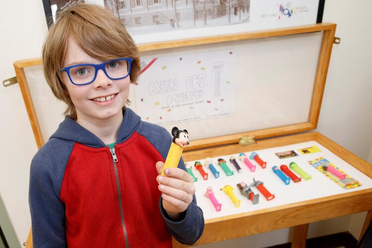

A submission based collaborative audio project, that is created 2 times a year, with a great deal of the content being a result of the Cough Park Hotline (347) 601-4266. The Hotline is a telephone number that anyone can call, and leave up to a three minute message about dreams, ghost stories, music, rants, recipes for better living, or anything they want.
 Text by Leila TimminsPhoto by Tamara Beckwith (NY Post) Felix and Henry’s Pez Museum first opened in 2012 in the basement of their family home in London, Ontario. Showcasing their Pez collection along shelves and cases in a small basement room, the museum also featured a custom audio track, Pez-inspired art, a world map showing where each of the Pez had come from, homemade vending machine, Pez rug, donor wall and guest book. Felix and Henry are the school-aged sons of artist Jason McLean and the co-directors of the museum, who have been collaborating with their dad on the project for almost a decade. The first show was a huge success with everyone from local artists and celebrities to Rick Rhodes (then Editor of Canadian Art Magazine) coming to visit. “Once we got Michael Snow to sign one of the Pez, it really started to take off”, recalls McLean. For years, he would carry Pez with him while travelling and get anyone he was interested in or admired to sign one of the dispensers. The collection, which has grown to over 3000 Pez includes signatures from celebrities such as David Letterman, Mike Myers, Sarah Silverman, Regis Philbin, Yoko Ono, and Kelsey Grammar, as well as baseball players, musicians, friends and fellow artists. Since its inception, Pez Museum shows have happened in various locations across the country including Vancouver, London, Halifax, and Toronto. Most recently, Henry has taken over the collection from his big brother and has been curating a rotating display of Pez and ephemera in a vitrine at the Brooklyn Public Library in the Carroll Gardens neighborhood. “I really like the history of Pez” Henry tells a reporter for the New York Post, when talking about the motivation for his recent display on the evolution of Pez dispensers. According to Henry, Pez originated in Austria in 1927 and were marketed as a mint to help adults quit smoking. When brought to America, they did not sell well and so the company switched tactics and added the cartoon heads to be more appealing to children. “I actually hate the candy” he tells reporters, he just likes them as objects. This kind of collecting and interest in material culture does not stop with Pez in the McLean household. Henry and Jason also have collected fruit stickers, candy bar wrappers, torn pieces of money, silica packets, ticket stubs, and cereal boxes under the moniker “Henry and Jay’s Collection Agency”. Jason McLean’s exhibition at the RMG If you see me, say hello features an installation of the Pez Museum, as well as a selection of the cereal boxes and candy bar wrappers. Pez Museum Facebook Page Press: NY Times NY Post Metro Bedford and Bowery Pardon Me For Asking White Hot Magazine RMG Interview with Duncan Skiles